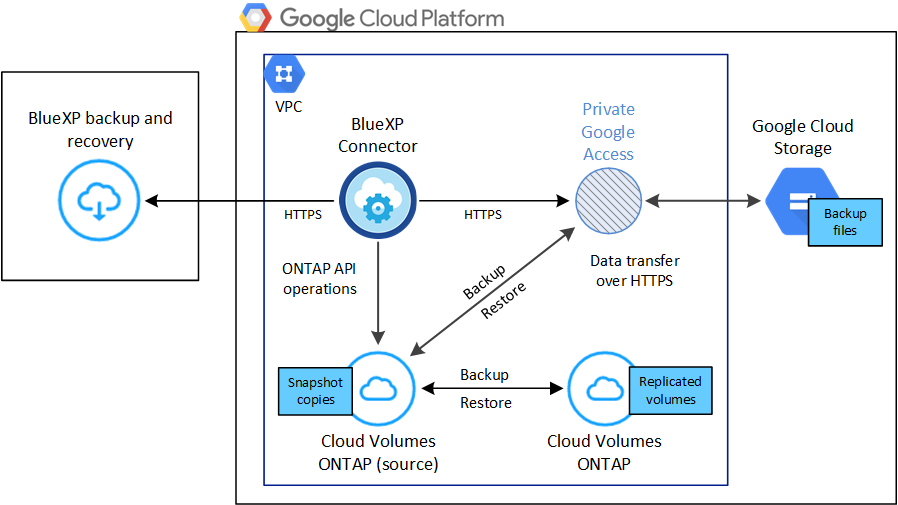

版本資訊
版本資訊
將 Cloud Volumes ONTAP 資料備份至 Google Cloud Storage
 建議變更
建議變更
請完成幾個步驟、開始將 Cloud Volumes ONTAP 系統的大量資料備份到 Google Cloud Storage 。
快速入門
請依照下列步驟快速入門、或向下捲動至其餘部分以取得完整詳細資料。
 確認您的組態支援
確認您的組態支援-
您正在 GCP 中執行 Cloud Volumes ONTAP 9.8 或更新版本（建議使用 ONTAP 9.8P13 及更新版本）。
-
您擁有有效的 GCP 訂閱、可用於存放備份的儲存空間。
-
您的Google Cloud Project中有一個服務帳戶、該帳戶具有預先定義的儲存管理角色。
-
您已訂閱 "BlueXP Marketplace備份產品"或您已購買 "並啟動" NetApp 的 BlueXP 備份與恢復 BYOL 授權。
 準備您的BlueXP Connector
準備您的BlueXP Connector如果您已在 GCP 區域部署 Connector 、那麼您就可以設定好所有的連接器。如果沒有、則您需要在 GCP 中安裝 BlueXP Connector 、以便將 Cloud Volumes ONTAP 資料備份到 Google 雲端儲存設備。Connector 可安裝在具有完整網際網路存取（「標準模式」）的站台、或是有限的網際網路連線（「受限模式」）。
 驗證授權需求
驗證授權需求您必須檢查 Google Cloud 和 BlueXP 的授權要求。
 驗證複寫磁碟區的 ONTAP 網路需求
驗證複寫磁碟區的 ONTAP 網路需求確保來源和目的地系統符合 ONTAP 版本和網路需求。
 啟用 BlueXP 備份與還原
啟用 BlueXP 備份與還原選取工作環境、然後按一下右窗格中「備份與還原」服務旁的*「啟用」>「備份磁碟區」*。
 啟動 ONTAP 磁碟區上的備份
啟動 ONTAP 磁碟區上的備份按照安裝精靈的指示、選取您要使用的複寫和備份原則、以及您要備份的磁碟區。
確認您的組態支援
在開始將磁碟區備份至 Google Cloud Storage 之前、請先閱讀下列需求、以確定您擁有支援的組態。
下圖顯示每個元件、以及您需要在元件之間準備的連線。
或者、您也可以使用公用或私有連線、連線至複寫磁碟區的次要 ONTAP 系統。

- 支援 ONTAP 的支援版本
-
最低 ONTAP 9.8 ；建議使用 ONTAP 9.8P13 及更新版本。
- 支援的 GCP 區域
-
所有 GCP 區域均支援 BlueXP 備份與還原 "支援的地方 Cloud Volumes ONTAP"。
- GCP 服務帳戶
-
您必須在Google Cloud Project中擁有預先定義儲存管理角色的服務帳戶。 "瞭解如何建立服務帳戶"。
驗證授權需求
如需 BlueXP 備份與還原 PAYGO 授權、您可以在 Google Marketplace 中訂閱 BlueXP 、以便部署 Cloud Volumes ONTAP 與 BlueXP 備份與還原。您需要 "訂閱此BlueXP訂閱" 在您啟用 BlueXP 備份與還原之前。BlueXP 備份與還原的帳單是透過此訂閱完成。 "您可以從工作環境精靈的詳細資料 認證頁面訂閱"。
對於 BlueXP 備份與恢復 BYOL 授權、您需要 NetApp 的序號、以便在授權期間和容量內使用該服務。 "瞭解如何管理BYOL授權"。
而且您需要 Google 訂閱備份所在的儲存空間。
準備您的BlueXP Connector
Connector 必須安裝在可存取網際網路的 Google 區域。
驗證或新增連接器權限
若要使用 BlueXP 備份與還原「搜尋與還原」功能、您必須擁有 Connector 角色的特定權限、才能存取 Google Cloud BigQuery 服務。請參閱下列權限、如果您需要修改原則、請遵循這些步驟。
-
在中 "Google Cloud Console"請移至*角色*頁面。
-
使用頁面頂端的下拉式清單、選取包含您要編輯之角色的專案或組織。
-
選取自訂角色。
-
選取 * 編輯角色 * 以更新角色的權限。
-
選取 * 新增權限 * 、將下列新權限新增至角色。
bigquery.jobs.get bigquery.jobs.list bigquery.jobs.listAll bigquery.datasets.create bigquery.datasets.get bigquery.jobs.create bigquery.tables.get bigquery.tables.getData bigquery.tables.list bigquery.tables.create -
選取 * 更新 * 以儲存編輯的角色。
使用客戶管理的加密金鑰（CMEK）所需的資訊
您可以使用自己的客戶管理金鑰進行資料加密、而非使用預設的Google管理加密金鑰。跨區域和跨專案金鑰都受到支援、因此您可以為與 CMEK 金鑰專案不同的貯體選擇專案。如果您打算使用自己的客戶管理金鑰：
-
您必須擁有金鑰環和金鑰名稱、才能在啟動精靈中新增此資訊。 "深入瞭解客戶管理的加密金鑰"。
-
您需要確認 Connector 的角色中是否包含這些必要權限：
cloudkms.cryptoKeys.get
cloudkms.cryptoKeys.getIamPolicy
cloudkms.cryptoKeys.list
cloudkms.cryptoKeys.setIamPolicy
cloudkms.keyRings.get
cloudkms.keyRings.getIamPolicy
cloudkms.keyRings.list
cloudkms.keyRings.setIamPolicy-
您必須確認專案中已啟用 Google 「 Cloud Key Management Service （ KMS ）」 API 。請參閱 "Google Cloud 文件：啟用 API" 以取得詳細資料。
-
CMEK注意事項：*
-
同時支援 HSM （硬體支援）和軟體產生的金鑰。
-
同時支援新建立或匯入的雲端KMS金鑰。
-
僅支援區域金鑰；不支援通用金鑰。
-
目前僅支援「對稱加密/解密」用途。
-
與儲存帳戶相關聯的服務代理程式會透過 BlueXP 備份與還原指派「 CryptoKey Encrypter/Decypter （角色 / 雲端 kms.cryptoKeyEncrypterDecypter ）」 IAM 角色。
驗證複寫磁碟區的 ONTAP 網路需求
如果您打算使用 BlueXP 備份與還原在次要 ONTAP 系統上建立複寫的磁碟區、請確定來源和目的地系統符合下列網路需求。
內部部署 ONTAP 網路需求
-
如果叢集位於內部部署、您應該要在雲端供應商中、從公司網路連線到虛擬網路。這通常是VPN連線。
-
叢集必須符合額外的子網路、連接埠、防火牆和叢集需求。 ONTAP
由於您可以複寫到 Cloud Volumes ONTAP 或內部部署系統、因此請檢閱內部部署 ONTAP 系統的對等關係要求。 "請參閱ONTAP 《知識庫》文件中的叢集對等條件"。
Cloud Volumes ONTAP 網路需求
-
執行個體的安全性群組必須包含必要的傳入和傳出規則：特別是 ICMP 和連接埠 11104 和 11105 的規則。這些規則包含在預先定義的安全性群組中。
-
若要在 Cloud Volumes ONTAP 不同子網路中的兩個子網路之間複寫資料、必須將子網路路由在一起（這是預設設定）。
在 Cloud Volumes ONTAP 上啟用 BlueXP 備份與還原
輕鬆啟用 BluXP 備份與還原。這些步驟會因您現有的 Cloud Volumes ONTAP 系統或新系統而稍有不同。
-
在新系統上啟用 BlueXP 備份與還原 *
當您完成工作環境精靈以建立新的 Cloud Volumes ONTAP 系統時、即可啟用 BlueXP 備份與還原。
您必須已設定服務帳戶。如果您在建立Cloud Volumes ONTAP 此系統時未選擇服務帳戶、則需要關閉系統、Cloud Volumes ONTAP 並從GCP主控台將服務帳戶新增至該服務帳戶。
請參閱 "在 Cloud Volumes ONTAP GCP 中啟動" 以瞭解建立 Cloud Volumes ONTAP 您的整個系統的需求與詳細資料。
-
從 BlueXP Canvas 中選取 * 新增工作環境 * 、選擇雲端供應商、然後選取 * 新增 * 。選取 * 建立 Cloud Volumes ONTAP * 。
-
* 選擇位置 * ：選擇 * Google Cloud Platform * 。
-
* 選擇類型 * ：選擇 * Cloud Volumes ONTAP 《 * 》（單節點或高可用度）。
-
* 詳細資料與認證 * ：輸入下列資訊：
-
按一下*編輯專案*、如果您要使用的專案與預設專案（連接器所在的專案）不同、請選取新專案。
-
指定叢集名稱。
-
啟用 * 服務帳戶 * 切換、然後選取具有預先定義儲存管理角色的服務帳戶。這是啟用備份和分層所需的。
-
指定認證資料。
請確定已訂購 GCP Marketplace 。

-
-
* 服務 * ：保持 BlueXP 備份與還原服務為啟用狀態、然後按一下 * 繼續 * 。

-
請完成精靈中的頁面、依照中所述部署系統 "在 Cloud Volumes ONTAP GCP 中啟動"。

|
若要修改備份設定或新增複寫、請參閱 "管理ONTAP 還原備份"。 |
系統上已啟用 BlueXP 備份與還原。在這些 Cloud Volumes ONTAP 系統上建立磁碟區之後、請啟動 BlueXP 備份與還原、以及 "在您要保護的每個磁碟區上啟動備份"。
-
在現有系統上啟用 BlueXP 備份與還原 *
您可以隨時直接從工作環境啟用 BlueXP 備份與還原。
-
在 BlueXP Canvas 中、選取工作環境、然後在右側面板的備份與還原服務旁選取 * 啟用 * 。
如果備份的Google Cloud Storage目的地是在Canvas上作為工作環境存在、您可以將叢集拖曳至Google Cloud Storage工作環境、以啟動設定精靈。

|
|
若要修改備份設定或新增複寫、請參閱 "管理ONTAP 還原備份"。 |
啟動 ONTAP 磁碟區上的備份
隨時直接從內部部署工作環境啟動備份。
精靈會引導您完成下列主要步驟：
您也可以 顯示 API 命令 在審查步驟中、您可以複製程式碼、以便在未來的工作環境中自動啟用備份。
啟動精靈
-
使用下列其中一種方法存取啟動備份與還原精靈：
-
在 BlueXP 畫布中、選取工作環境、然後在右側面板的備份與還原服務旁選取 * 啟用 > 備份磁碟區 * 。

如果您備份的 GCP 目的地在 Canvas 上作為工作環境存在、您可以將 ONTAP 叢集拖曳到 GCP 物件儲存設備上。
-
在備份和恢復欄中選擇 * Volumes （卷） * 。從 Volumes （卷）選項卡中，選擇 Actions
 圖示並選取 * 啟動單一磁碟區的備份 * （尚未啟用複寫或備份至物件儲存設備的磁碟區）。
圖示並選取 * 啟動單一磁碟區的備份 * （尚未啟用複寫或備份至物件儲存設備的磁碟區）。
精靈的「簡介」頁面會顯示保護選項、包括本機快照、複寫和備份。如果您在此步驟中選擇了第二個選項、則會顯示「定義備份策略」頁面、並選取一個磁碟區。
-
-
繼續執行下列選項：
-
如果您已經有 BlueXP Connector 、您就可以設定好。只要選擇 * 下一步 * 即可。
-
如果您尚未安裝 BlueXP Connector 、則會出現 * 新增 Connector * 選項。請參閱 準備您的BlueXP Connector。
-
選取您要備份的磁碟區
選擇您要保護的磁碟區。受保護的磁碟區具有下列一項或多項： Snapshot 原則、複寫原則、備份至物件原則。
您可以選擇保護 FlexVol 或 FlexGroup 磁碟區、但是在為工作環境啟動備份時、您無法選擇這些磁碟區的混合。瞭解如何操作 "啟動工作環境中其他磁碟區的備份" （ FlexVol 或 FlexGroup ）。

|
|
請注意、如果您選擇的磁碟區已套用 Snapshot 或複寫原則、稍後您選取的原則將會覆寫這些現有原則。
-
在「選取磁碟區」頁面中、選取您要保護的磁碟區。
-
您也可以篩選資料列、僅顯示具有特定 Volume 類型、樣式等的 Volume 、以便更輕鬆地進行選擇。
-
選取第一個磁碟區之後、您可以選取所有 FlexVol 磁碟區（ FlexGroup 磁碟區一次只能選取一個）。若要備份所有現有的 FlexVol Volume 、請先勾選一個 Volume 、然後勾選標題列中的方塊。（
 ）。
）。 -
若要備份個別磁碟區、請勾選每個磁碟區的方塊（
 ）。
）。
-
-
選擇*下一步*。
定義備份策略
定義備份策略包括設定下列選項：
-
無論您想要一個或全部備份選項：本機快照、複寫及備份至物件儲存設備
-
架構
-
本機 Snapshot 原則
-
複寫目標和原則
如果您選擇的磁碟區具有不同於您在此步驟中選取的原則的 Snapshot 和複寫原則、則現有原則將會遭到覆寫。 -
備份至物件儲存資訊（提供者、加密、網路、備份原則和匯出選項）。
-
在「定義備份策略」頁面中、選擇下列其中一項或全部。依預設會選取這三個選項：
-
* 本機快照 * ：如果您要執行複寫或備份至物件儲存設備、則必須建立本機快照。
-
* 複寫 * ：在另一個 ONTAP 儲存系統上建立複寫的磁碟區。
-
* 備份 * ：將磁碟區備份至物件儲存。
-
-
* 架構 * ：如果您選擇複寫與備份、請選擇下列其中一種資訊流程：
-
* 級聯 * ：資訊從主要儲存系統流向次要儲存設備、從次要儲存設備流向物件儲存設備。
-
* 扇出 * ：資訊從主要儲存系統傳輸到次要的 _ 和 _ 、從主要儲存設備傳輸到物件儲存設備。
如需這些架構的詳細資訊、請參閱 "規劃您的保護旅程"。
-
-
* 本機 Snapshot * ：選擇現有的 Snapshot 原則或建立一個。
若要在啟動備份之前建立自訂原則、請參閱 "建立原則"。 若要建立原則、請選取 * 建立新原則 * 、然後執行下列步驟：
-
輸入原則名稱。
-
最多可選取 5 個排程、通常是不同的頻率。
-
選擇* Create （建立）。
-
-
* 複寫 * ：設定下列選項：
-
* 複寫目標 * ：選取目的地工作環境和 SVM 。您也可以選擇要新增至複寫磁碟區名稱的目的地集合體、集合體和前置詞或尾碼。
-
* 複寫原則 * ：選擇現有的複寫原則或建立複寫原則。
若要在啟動複寫之前建立自訂原則、請參閱 "建立原則"。 若要建立原則、請選取 * 建立新原則 * 、然後執行下列步驟：
-
輸入原則名稱。
-
最多可選取 5 個排程、通常是不同的頻率。
-
選擇* Create （建立）。
-
-
-
* 備份到物件 * ：如果您選取 * 備份 * 、請設定下列選項：
-
* 供應商 * ：選擇 * Google Cloud * 。
-
* 提供者設定 * ：輸入儲存備份的提供者詳細資料和區域。
建立新的貯體或選擇現有的貯體。
-
* 加密金鑰 * ：如果您建立了新的 Google 儲存庫、請輸入供應商提供給您的加密金鑰資訊。選擇您要使用預設的 Google Cloud 加密金鑰、還是從 Google 帳戶選擇自己的客戶管理金鑰、以管理資料加密。
如果您選擇使用自己的客戶管理金鑰、請輸入金鑰資料保險箱和金鑰資訊。
如果您選擇現有的 Google Cloud 儲存庫、則加密資訊已可供使用、因此您不需要立即輸入。 -
* 備份原則 * ：選取現有的備份至物件儲存原則或建立一個。
若要在啟動備份之前建立自訂原則、請參閱 "建立原則"。 若要建立原則、請選取 * 建立新原則 * 、然後執行下列步驟：
-
輸入原則名稱。
-
最多可選取 5 個排程、通常是不同的頻率。
-
選擇* Create （建立）。
-
-
* 將現有的 Snapshot 複本匯出至物件儲存區做為備份複本 * ：如果此工作環境中有任何本機 Snapshot 複本符合您剛為此工作環境選取的備份排程標籤（例如每日、每週等）、則會顯示此額外提示。核取此方塊、將所有歷史快照複製到物件儲存區做為備份檔案、以確保磁碟區獲得最完整的保護。
-
-
選擇*下一步*。
檢閱您的選擇
這是檢視您的選擇並視需要進行調整的機會。
-
在「審查」頁面中、檢閱您的選擇。
-
（可選）選中此複選框以 * 自動將 Snapshot 策略標籤與複製和備份策略標籤同步 * 。這會建立具有標籤的 Snapshot 、該標籤與複寫和備份原則中的標籤相符。
-
選取 * 啟動備份 * 。
BlueXP 備份與還原會開始為您的磁碟區進行初始備份。複寫磁碟區和備份檔案的基礎傳輸包含主要儲存系統資料的完整複本。後續傳輸包含 Snapshot 複本中所含主要儲存系統資料的差異複本。
複寫的磁碟區會建立在目的地叢集中、並與主要儲存系統磁碟區同步。
Google Cloud Storage 貯體是在您輸入的 Google 存取金鑰和秘密金鑰所指示的服務帳戶中建立、備份檔案則儲存在該處。
根據預設、備份會與_Standard_儲存類別相關聯。您可以使用成本較低的_Nearlin、_Coldlin或_Archive_儲存類別。不過、您可以透過 Google 來設定儲存類別、而不是透過 BlueXP 備份與還原 UI 來設定。請參閱Google主題 "變更儲存區的預設儲存類別" 以取得詳細資料。
Volume Backup Dashboard隨即顯示、以便您監控備份狀態。
您也可以使用監控備份與還原工作的狀態 "「工作監控」面板"。
顯示 API 命令
您可能想要顯示並選擇性複製在啟動備份與還原精靈中使用的 API 命令。您可能想要在未來的工作環境中自動啟用備份。
-
從啟動備份與還原精靈中、選取 * 檢視 API 要求 * 。
-
若要將命令複製到剪貼簿、請選取 * 複製 * 圖示。
接下來呢？
-
您可以 "管理備份檔案與備份原則"。這包括開始和停止備份、刪除備份、新增和變更備份排程等。
-
您可以 "管理叢集層級的備份設定"。這包括變更可上傳備份至物件儲存設備的網路頻寬、變更未來磁碟區的自動備份設定等。
-
您也可以 "從備份檔案還原磁碟區、資料夾或個別檔案" 至Cloud Volumes ONTAP Google的某個系統、或內部部署ONTAP 的某個系統。